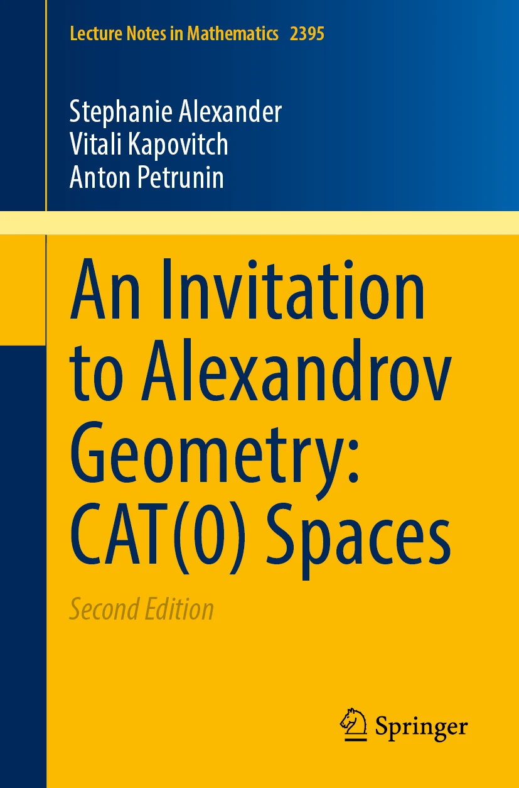

Links: Second edition (2026) - First edition (2019) - Erratum to first edition - arXiv - Source files
The idea is to demonstrate the beauty and power of Alexandrov geometry by reaching interesting applications and theorems with a minimum of preparation. These notes arise as an offshoot of the book on Alexandrov geometry we have been writing for a number of years. The notes were shaped in a number of lectures given by the authors.
Here is the list of topics in the second edition.